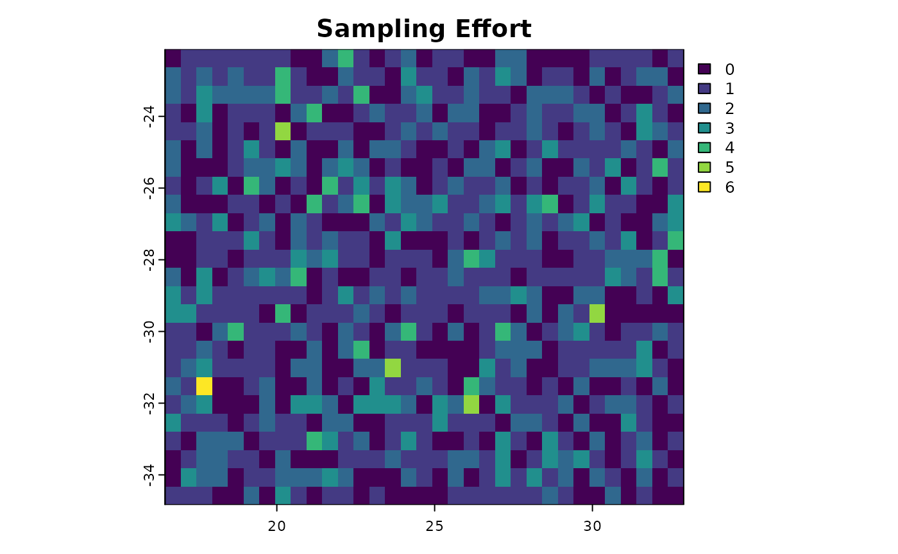

dissMapR Tutorial
This document outlines a step-by-step workflow for analyzing
compositional dissimilarity and bioregionalization using
dissMapR.
All code chunks below illustrate how one might implement each step in R,
using various commonly used packages (e.g., sf,
terra, dplyr, ggplot2,
etc.).
Please note that paths to data, package names, or exact functions may
need adjustment depending on your local setup.
library(dissMapR)
#> Warning: replacing previous import 'dplyr::intersect' by 'terra::intersect'
#> when loading 'dissMapR'
#> Warning: replacing previous import 'dplyr::union' by 'terra::union' when
#> loading 'dissMapR'
#> Warning: replacing previous import 'terra::time<-' by 'zoo::time<-' when
#> loading 'dissMapR'1. User-Defined Area of Interest and Grid Resolution
Load libraries
# Load necessary libraries
library(sf) # for vector spatial data
#> Linking to GEOS 3.12.1, GDAL 3.8.4, PROJ 9.4.0; sf_use_s2() is TRUE
library(terra) # for raster/grid operations
#> terra 1.8.21
library(dplyr) # for data manipulation
#>
#> Attaching package: 'dplyr'
#> The following objects are masked from 'package:terra':
#>
#> intersect, union
#> The following objects are masked from 'package:stats':
#>
#> filter, lag
#> The following objects are masked from 'package:base':
#>
#> intersect, setdiff, setequal, union
library(ggplot2) # for plotting
library(tidyr)
#>
#> Attaching package: 'tidyr'
#> The following object is masked from 'package:terra':
#>
#> extractDefine the AOI (e.g., using a shapefile ‘rsa.shp’)
# Adjust the path and layer name as needed
# aoi <- st_read("D:/Methods/R/myR_Packages/all_B3_packages/dissMapR/data/rsa.shp")
aoi <- st_read(system.file("data", "rsa.shp", package = "dissMapR"))
#> Reading layer `rsa' from data source
#> `/home/runner/work/_temp/Library/dissMapR/data/rsa.shp' using driver `ESRI Shapefile'
#> Simple feature collection with 1 feature and 1 field
#> Geometry type: POLYGON
#> Dimension: XY
#> Bounding box: xmin: 16.45802 ymin: -34.83514 xmax: 32.89125 ymax: -22.12661
#> Geodetic CRS: WGS 84
# aoi <- st_read(system.file("extdata", "rsa.shp", package = "dissMapR"))Generate Grid and Centroids Data Frame
#### Grid Resolution (e.g., 0.5 degrees)
grid_res <- 0.5
# Create blank raster template with grid_res over the AOI
# Use terra::rast() and the extent (bounding box) from 'aoi'
r_template <- rast(ext(aoi), resolution = grid_res, crs = st_crs(aoi)$wkt)
r_template
#> class : SpatRaster
#> dimensions : 25, 33, 1 (nrow, ncol, nlyr)
#> resolution : 0.4979767, 0.5083412 (x, y)
#> extent : 16.45802, 32.89125, -34.83514, -22.12661 (xmin, xmax, ymin, ymax)
#> coord. ref. : lon/lat WGS 84 (EPSG:4326)
# Convert raster cell centroids to a data frame (x = longitude, y = latitude)
xy <- as.data.frame(crds(r_template))
colnames(xy) <- c("x", "y")
dim(xy)
#> [1] 825 2
# Optional: clip out grid cells that fall outside the AOI boundary
# Convert xy -> sf -> spatial filter
xy_sf <- st_as_sf(xy, coords = c("x", "y"), crs = st_crs(aoi), remove = FALSE)
xy_aoi <- xy_sf[aoi, ] # intersection
xy <- st_drop_geometry(xy_aoi)
dim(xy)
#> [1] 465 2Visualise AOI Grid on Map
# Quick visualization: AOI + centroid points
ggplot() +
geom_sf(data = aoi, fill = "lightgray", color = "black") +
geom_point(data = xy, aes(x = x, y = y), color = "blue", size = 1) +
ggtitle("Area of Interest with 0.5° Grid") +
theme_minimal()Outcome:
- A map of the AOI with 0.5° grid cells
- A data frame xy containing centroid coordinates for each
site (grid cell)
2. Site-by-Species Matrix and Sampling Effort
Occurrence_Data
Suppose you have occurrence data with fields: species, longitude, latitude (e.g., from GBIF, local CSV, etc.).
# Simulate for demonstration
occ_data <- data.frame(
species = sample(c("SpeciesA", "SpeciesB", "SpeciesC"), 1000, replace = TRUE),
x = runif(1000, min(st_bbox(aoi)["xmin"]), max(st_bbox(aoi)["xmax"])),
y = runif(1000, min(st_bbox(aoi)["ymin"]), max(st_bbox(aoi)["ymax"]))
)
# Assign each record to a grid cell based on coordinates:
# Convert 'xy' to a raster to facilitate cell lookups
r_id <- r_template
values(r_id) <- 1:ncell(r_id) # each cell gets a unique ID
# Convert occurrence data to SpatVector (terra) for cell lookups
occ_vect <- vect(occ_data, geom = c("x", "y"), crs = crs(r_template))
# Identify cell ID for each occurrence
cell_ids <- cellFromXY(r_id, geom(occ_vect)[, c("x", "y")])
occ_data$cell_id <- cell_ids
dim(occ_data)
#> [1] 1000 4
# Filter out occurrences that fall outside the defined AOI grid
occ_data <- subset(occ_data, !is.na(cell_id))
head(occ_data)
#> species x y cell_id
#> 1 SpeciesA 23.82304 -23.87371 114
#> 2 SpeciesC 19.10751 -25.67010 204
#> 3 SpeciesC 19.35210 -25.03209 171
#> 4 SpeciesA 19.71555 -34.12561 766
#> 5 SpeciesB 22.33473 -33.39208 738
#> 6 SpeciesC 19.43791 -25.59672 204
dim(occ_data)
#> [1] 1000 4Unique site codes with coordinates
# Site coordinates
# Count number of occurrences per cell as a measure of sampling effort
sites_xy <- occ_data %>%
group_by(cell_id, x, y) %>%
summarise(effort = n(),
richness = n_distinct(species))
#> `summarise()` has grouped output by 'cell_id', 'x'. You can override using the
#> `.groups` argument.
names(sites_xy) = c("cell_id","x","y","effort","richness")
dim(sites_xy)
#> [1] 1000 5
head(sites_xy)
#> # A tibble: 6 × 5
#> # Groups: cell_id, x [6]
#> cell_id x y effort richness
#> <dbl> <dbl> <dbl> <int> <int>
#> 1 2 17.1 -22.2 1 1
#> 2 3 17.9 -22.5 1 1
#> 3 4 18.2 -22.4 1 1
#> 4 5 18.6 -22.6 1 1
#> 5 6 19.2 -22.4 1 1
#> 6 7 19.8 -22.2 1 1Sampling Effort
# Count number of occurrences per cell as a measure of sampling effort
effort_df <- occ_data %>%
group_by(cell_id) %>% # ,decimalLongitude,decimalLatitude
summarise(n_occurrences = n())
dim(effort_df)
#> [1] 589 2
# Rasterize sampling effort (optional for mapping)
sam_eff_rast <- r_id
values(sam_eff_rast) <- 0
values(sam_eff_rast)[effort_df$cell_id] <- effort_df$n_occurrencesSite by Species Matrix
# For presence-absence, pivot occurrence data to wide format:
# occ_data = c('species', 'x', 'y', 'cell_id')
sbs_long <- occ_data %>%
distinct(cell_id, species) %>%
mutate(presence = 1)
dim(sbs_long)
#> [1] 817 3
# Ensure we have a row for every cell (site) in 'xy'
all_cells <- data.frame(cell_id = 1:ncell(r_id))
sbs_wide <- all_cells %>%
left_join(sbs_long, by = "cell_id") %>%
pivot_wider(id_cols = cell_id, names_from = species, values_from = presence, values_fill = 0)
dim(sbs_wide)
#> [1] 825 5
# sbs - site-by-species matrix
sbs <- as.data.frame(sbs_wide[ , -1]) # remove cell_id column
row.names(sbs) <- sbs_wide$cell_id
dim(sbs)
#> [1] 825 4
# Summarize sampling effort in a vector aligned with sbs rows
sam.eff <- numeric(nrow(sbs))
sam.eff[effort_df$cell_id] <- effort_df$n_occurrencesOptional Richness and Sampling Effort Maps
# Species richness map (row sums of sbs)
richness <- rowSums(sbs)
richness_rast <- r_id
values(richness_rast) <- 0
values(richness_rast)[as.numeric(names(richness))] <- richness
# Quick plot of sampling effort + species richness
plot(sam_eff_rast, main = "Sampling Effort")
plot(richness_rast, main = "Species Richness")Outcome:
- sbs: binary presence–absence (site-by-species)
- sam.eff: numeric sampling effort per site
- Optional raster maps for sampling effort and species richness
3. Site-by-Environment Matrix
Environmental Data
Assume we have environmental rasters (temp, precip, etc.) with same CRS and extent
# Here we just simulate them:
env1 <- r_template; values(env1) <- runif(ncell(r_template), min = 10, max = 30) # e.g., temperature
env2 <- r_template; values(env2) <- runif(ncell(r_template), min = 100, max = 3000) # e.g., precipitation
# Combine into a SpatRaster
env_stack <- c(env1, env2)
names(env_stack) <- c("temp", "precip")
env_stack
#> class : SpatRaster
#> dimensions : 25, 33, 2 (nrow, ncol, nlyr)
#> resolution : 0.4979767, 0.5083412 (x, y)
#> extent : 16.45802, 32.89125, -34.83514, -22.12661 (xmin, xmax, ymin, ymax)
#> coord. ref. : lon/lat WGS 84 (EPSG:4326)
#> source(s) : memory
#> names : temp, precip
#> min values : 10.01149, 104.8558
#> max values : 29.95478, 2996.3873Extract Environmental Values
# Extract environmental values at each site centroid
env_vals <- terra::extract(env_stack, cbind(sites_xy$x, sites_xy$y))
head(env_vals)
#> temp precip
#> 1 16.10408 837.0820
#> 2 17.22516 2466.4732
#> 3 21.59409 2737.9774
#> 4 26.19081 1847.2479
#> 5 20.05141 482.2849
#> 6 18.30004 2552.3933
# env_vals <- env_vals[ , -1] # remove ID column returned by extract()Build SBE
# Combine environment variables + sampling effort into one data frame
sbe <- cbind(env_vals, sites_xy$effort) # site-by-environment, includes sampling effort
# env_vals <- cbind(sites_xy[, c(1,4,5)], env_vals)
dim(sbe)
#> [1] 1000 3
# colnames(sbe) <- c("temp", "precip", "sam.eff")
# We'll also update the env_stack to include sampling effort if desired
sam_eff_raster <- sam_eff_rast
names(sam_eff_raster) <- "sam.eff"
env_stack_all <- c(env_stack, sam_eff_raster)
env_stack_all
#> class : SpatRaster
#> dimensions : 25, 33, 3 (nrow, ncol, nlyr)
#> resolution : 0.4979767, 0.5083412 (x, y)
#> extent : 16.45802, 32.89125, -34.83514, -22.12661 (xmin, xmax, ymin, ymax)
#> coord. ref. : lon/lat WGS 84 (EPSG:4326)
#> source(s) : memory
#> names : temp, precip, sam.eff
#> min values : 10.01149, 104.8558, 0
#> max values : 29.95478, 2996.3873, 6Outcome:
- sbe: site-by-environment matrix (including sampling
effort)
- Updated raster stack (env_stack_all) with environment
layers + sampling effort
4. Zeta Decline and Zeta Decay
Zeta Decline
We’ll assume dissMapR or zetadiv provides functions for multi-site zeta.
# For example, using the 'zetadiv' package:
# library(zetadiv)
#
# # sbs must be a site-by-species matrix (rows=sites, columns=species)
# zeta_orders <- 1:5
#
# # Run `Zeta.decline.ex`
# zeta.decline <- Zeta.decline.ex(sbs[,-3],
# orders = zeta_orders,
# plot = FALSE)
#
# # Plot zeta decline
# plot(zeta_orders,
# zeta.decline$zeta.val,
# type = "b",
# xlab = "Order", ylab = "Mean Zeta Diversity",
# main = "Zeta Decline")Zeta Decay
Evaluate how zeta diversity changes with distance
dim(sbs[,-3])
#> [1] 825 3
dim(sites_xy)
#> [1] 1000 5
# zeta.decay <- Zeta.ddecay(
# data.spec = sbs[,-3], # species presence-absence matrix
# # xy = cbind(xy_sf$x,xy_sf$y),# site coordinates
# xy = cbind(sites_xy$x,sites_xy$y),# site coordinates
# order = 2, # zeta order of interest (e.g., 2)
# method = "mean", # or "sum"
# sam = 100, # number of distance bins (or set distances manually)
# plot = FALSE # set to TRUE to auto-plot
# )
# The returned object contains distance bins (or pairs of sites, etc.) and
# average zeta diversity for each distance bin.
# Plot the result:
# Plot.zeta.ddecay(zeta.decay)
# Multiple-Order Distance Decay Example
# If you want to see how zeta distance-decay behaves across multiple orders,
# you can use Zeta.ddecays():
# zeta.decays <- Zeta.ddecays(
# data.spec = sbs[,-3],
# xy = cbind(sites_xy$x,sites_xy$y),
# orders = zeta_orders, # or pick any vector of orders
# method = "mean",
# sam = 1000,
# plot = FALSE
# )
# Then visualize:
# Plot.zeta.ddecays(zeta.decays)Outcome:
- Measures of zeta decline across orders
- Measures of zeta decay with distance
- Plots illustrating these relationships
5. MS-GDM with Zeta.msgdm(sbs, sbe, xy)
Fit MultiSite GDM
We now assume dissMapR has a function Zeta.msgdm() for multi-site GDM (this is hypothetical; adapt based on actual package usage)
# Fit MS-GDM for orders = 2, 3, 5, 10
orders_to_fit <- c(2, 3, 5, 10)
dim(sbs[,-3])
#> [1] 825 3
dim(sbe)
#> [1] 1000 3
dim(sites_xy)
#> [1] 1000 5
# fit <- Zeta.msgdm(sbs[,-3],
# sbe,
# sites_xy[,2:3],
# order = orders_to_fit,
# reg.type = 'ispline',
# sam = 100)
# Summaries or model stats
# summary(fit$model)
# dev.new()
# graphics::plot(fit$model)Outcome:
- zeta2: fitted MS-GDM for order 2
- Additional model objects for orders 3, 5, and 10
6. Prediction with zeta2 (Present Scenario)
# # Uniform Sampling
# # Replace sampling effort in 'sbe' with its maximum value
# sam.max <- max(sbe$sam.eff)
# sbe_now <- sbe
# sbe_now$sam.eff <- sam.max
#
# # Predict zeta2
# zeta.now <- predict(zeta2, newdata = sbe_now)
# # zeta.now should be a site-by-site matrix of predicted dissimilarities (order=2)
#
# # Visualize zeta_now
# # (i) NMDS
# library(vegan)
# nmds_now <- metaMDS(zeta.now, k = 3, try = 20)
#
# # Extract NMDS coordinates
# nmds_coords <- as.data.frame(scores(nmds_now))
# colnames(nmds_coords) <- c("NMDS1", "NMDS2", "NMDS3")
#
# # (ii) RGB composite plot from NMDS axes
# # Combine NMDS coords with site centroids 'xy'
# nmds_plot_df <- cbind(xy, nmds_coords)
#
# ggplot(nmds_plot_df, aes(x = x, y = y)) +
# geom_point(aes(color = rgb(
# scales::rescale(NMDS1),
# scales::rescale(NMDS2),
# scales::rescale(NMDS3)
# )), size = 2) +
# scale_color_identity() +
# ggtitle("Present Scenario: NMDS RGB Composite") +
# theme_minimal()
#
# # (iii) Clustering + Bioregions
# # Example: hierarchical clustering
# hc_now <- hclust(as.dist(zeta.now), method = "ward.D2")
# # Choose number of clusters
# k <- 5
# bioregions_now <- cutree(hc_now, k = k)Outcome:
- zeta.now: predicted site-by-site dissimilarity matrix
under uniform sampling
- NMDS-based RGB map
- Bioregional clusters (e.g., 5 clusters)
7. Prediction with zeta2 (Future Scenarios)
# Prepare Future Env
# # Suppose we have m future scenarios for environment (temp, precip).
# # We'll combine them so that all scenarios + present are in one large sbe data frame.
#
# # Create a placeholder example for 2 future scenarios
# env1_future1 <- env1; values(env1_future1) <- values(env1_future1) + 2
# env2_future1 <- env2; values(env2_future1) <- values(env2_future1) + 100
#
# env1_future2 <- env1; values(env1_future2) <- values(env1_future2) + 4
# env2_future2 <- env2; values(env2_future2) <- values(env2_future2) + 200
#
# # Extract for each scenario
# env_vals_future1 <- extract(c(env1_future1, env2_future1), cbind(xy$x, xy$y))[, -1]
# env_vals_future2 <- extract(c(env1_future2, env2_future2), cbind(xy$x, xy$y))[, -1]
#
# # Combine into data frames, reusing sam.max
# sbe_future1 <- cbind(env_vals_future1, sam.eff = sam.max)
# colnames(sbe_future1) <- c("temp", "precip", "sam.eff")
#
# sbe_future2 <- cbind(env_vals_future2, sam.eff = sam.max)
# colnames(sbe_future2) <- c("temp", "precip", "sam.eff")
#
# # Combine present (sbe_now) + 2 future scenarios:
# sbe_all <- rbind(sbe_now, sbe_future1, sbe_future2)
#
# # Predict Future
# zeta.future <- predict(zeta2, newdata = sbe_all)
# # This will be a ((m+1)*n x (m+1)*n) dissimilarity matrix
# # where m=2 (two future scenarios), n=number of sites
#
# # Visualize Future
# # We can subset 'zeta.future' to map each scenario individually
# # For example, the first 'n' rows/cols = present, next 'n' = future1, last 'n' = future2
# n_sites <- nrow(sbe_now)
# present_idx <- 1:n_sites
# future1_idx <- (n_sites+1):(2*n_sites)
# future2_idx <- (2*n_sites+1):(3*n_sites)
#
# zeta.present <- zeta.future[present_idx, present_idx]
# zeta.fut1 <- zeta.future[future1_idx, future1_idx]
# zeta.fut2 <- zeta.future[future2_idx, future2_idx]
#
# # Optionally run NMDS or clustering for each scenario
# # Here, just an example with future scenario 1
# nmds_fut1 <- metaMDS(zeta.fut1, k = 3, try = 20)
# nmds_coords_fut1 <- as.data.frame(scores(nmds_fut1))
# # (Plot similarly as above, but note the site order matches rows in future1_idx)Outcome:
- zeta.future: site-by-site predicted dissimilarities
for present + multiple future scenarios
- Tools for NMDS/clustering to map future shifts in bioregions
8. Data Publication to Zenodo
# Prepare Outputs
# Collect your final data frames and raster objects:
# - sbs, xy, sbe, zeta.now, zeta.future, etc.
# - Maps (sampling effort, zeta plots, NMDS RGB maps, cluster results)
# - Model objects (zeta2, etc.)
# # Save them to disk as CSV, RDS, GeoTIFF, etc.
# saveRDS(sbs, "sbs.rds")
# saveRDS(xy, "xy.rds")
# saveRDS(sbe, "sbe.rds")
# saveRDS(zeta.now, "zeta_now.rds")
# saveRDS(zeta.future, "zeta_future.rds")
# # ... etc.
#
# # Zenodo Upload
# # Use zen4R or manual upload:
# # install.packages("zen4R")
# library(zen4R)
#
# # Provide your Zenodo token, metadata, etc.
# zenodo <- ZenodoManager$new(token = "YOUR_ZENODO_TOKEN")
#
# # Create a new deposition, set metadata
# my_deposition <- zenodo$createEmptyRecord()
# my_deposition <- zenodo$setMetadata(
# my_deposition,
# title = "Multi-Site Dissimilarity Data & Models",
# upload_type = "dataset",
# description = "Data and model outputs from the dissMapR workflow.",
# creators = list(
# list(name = "Your Name", affiliation = "Your Institution")
# )
# )
# Then upload files:
# zenodo$uploadFile("sbs.rds", my_deposition$id)
# zenodo$uploadFile("sbe.rds", my_deposition$id)
# etc.
# Finally, publish:
# zenodo$publishRecord(my_deposition$id)Outcome:
- All necessary data (e.g., sbs, xy,
sbe, zeta.now, zeta.future,
figures) are archived on Zenodo for reproducibility.
Final Remarks
- This script demonstrates the core steps for
dissecting compositional turnover and bioregional patterns under present
or future scenarios using
dissMapR(and related packages).
- Each step can be adapted to use your specific data sources and
packages.
- Always verify spatial extents, coordinate reference systems, and the validity of environmental data before scaling up analyses.